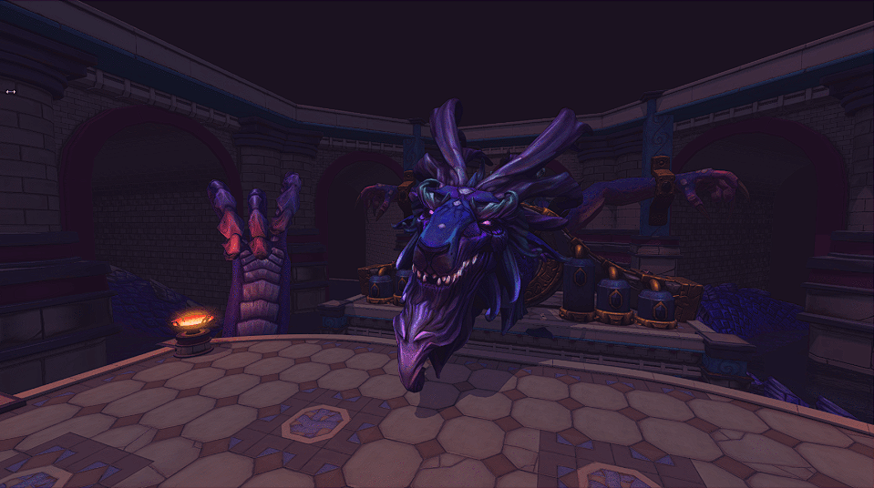
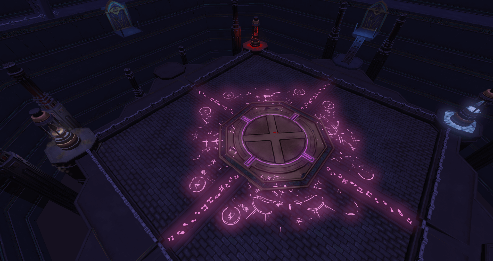
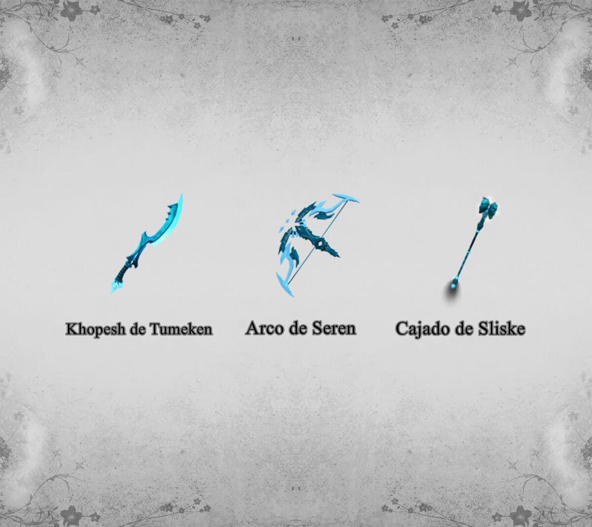

Atualizado em 12 Abr 2022 - 12:12
Seiryu
Seiryu também referido como a Serpente Azure, Besta Guardiã das Terras Orientais, adorado pelos Acólitos de Seiryu nas Ilhas Wushanko. É um dos quatro Guardiões de Aminishi, e é considerado o mais puro pelos monges. Centenas de anos atrás, Seiryu foi acorrentado e lentamente corrompido por cristais negros infundidos com o poder de Xau-Tak. Seiryu mais tarde seria libertado por vários aventureiros que exploravam o templo. Ele se comunicou telepaticamente com eles e expressou sua gratidão por ser libertado dos cristais, afirmando que sentiu outro ser no mesmo tormento que sofreu sob Forinthry.
Onde enfrentá-lo: Templo de Aminishi.

Possíveis recompensas:
